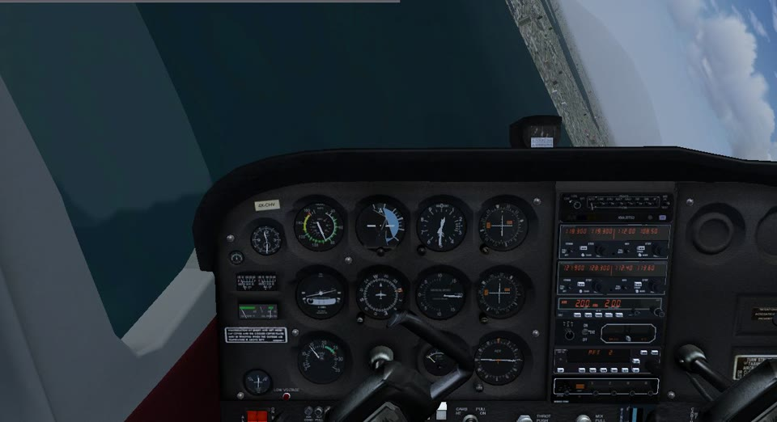
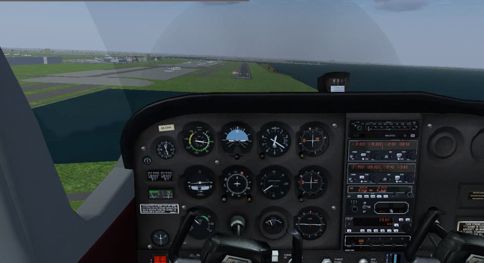
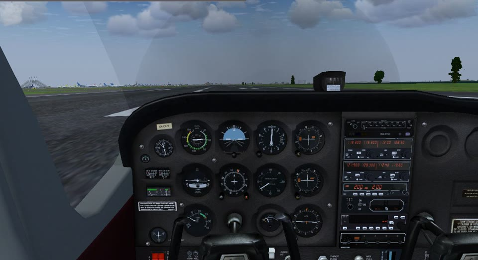
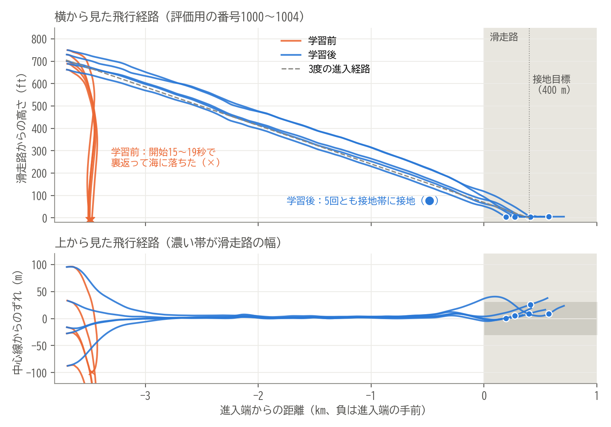
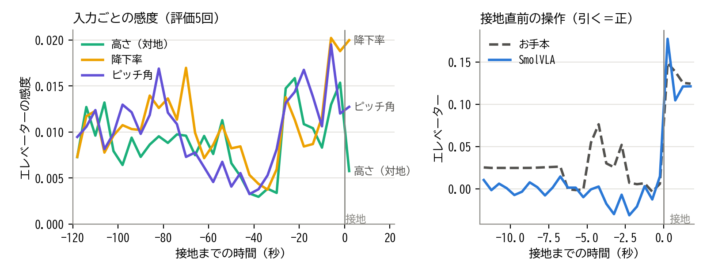

画像と言語から行動を出すVLAが、航空機という異なる身体の、連続的で失敗の許されない制御に通用するかを確かめる。
同じ開始条件で学習前後を比べ、何ができるようになり、何が足りないかを数値で示す。
着陸は飛行で最も事故の多い段階。画像から状況を判断する操縦支援や、訓練の評価の自動化につながる題材。



動画を1〜3分にまとめられるよう、タスクを「最終進入から接地まで」に絞りました。成功の条件は、要件定義として、実装を始める前に数値で決めました。
| 項目 | 内容 |
|---|---|
| 環境 | FlightGear 2024.1.4（Windows）、羽田空港RJTT、滑走路34R、昼・無風 |
| 機体 | セスナ172P（単発のプロペラ機） |
| 開始 | 滑走路の2 NM（約3.7 km）手前、3度の進入経路上、約70 kt。乱数で横±100 m・高さ±60 ft・方位±5度・速度±5 ktずらす |
| 操作 | エルロン・エレベーター・ラダー・スロットルの4つ。フラップ・トリム・ブレーキは固定 |
| 終了 | 接地の5秒後（減速・停止は対象外）。墜落・着水したら自動で終了 |
| 評価 | 墜落なし、接地位置（進入端から0〜900 m）、中心線（15 m以内）、接地直前の降下率、バンク角、主脚からの接地、機首方位（5度以内）、バウンドなし（2 ft以内）、滑走路内の滑走、規定時間の滑走、脚の損傷なしの11項目。すべて合格で成功 |
まずゲームパッドで手動着陸を収録しましたが、17回中2回しか全項目に合格せず、学習には足りませんでした。そこで、機体の状態を読んで4つの操作を出すPID制御の自動着陸プログラムを作りました。中心線と進入経路を追い、速度をスロットルで保ち、高さ20 ftから機首を上げて降下を弱めます（フレア）。従来の制御でお手本を作り、それをAIが学ぶという、AIと制御の組み合わせ方です。
お手本が常に理想の経路を飛ぶと、AIは「ずれから戻る」操作を学べません。そこで、開始時のずれを広げた条件（高さ±150 ft・横±150 m、開始距離1・1/2・1/4）の飛行を加えました。最終的な学習データは48回分で、画像は学習用9917枚・検証用2995枚です。
| 項目 | 内容 |
|---|---|
| モデル | SmolVLA（LeRobot 0.4.3、lerobot/smolvla_base）。視覚・言語モデルSmolVLM2をもとに、ロボットの操作を出力するよう学習済み |
| 入力 | 画像（256×256）、英語の指示文、機体の状態17個（滑走路からの距離・横ずれ・高さ、速度、姿勢、角速度、接地の有無） |
| 出力 | 4つの操作（−1〜1に正規化） |
| 学習 | 画像1枚ごとに、その瞬間の状態とお手本の操作を1組にして学習。バッチ8、15000ステップ（学習用画像を約12周）、RTX 3060で約1時間 |
取得時刻・受信時刻・シミュレーション時刻を区別して処理時間を測ると、画像の取得に0.3〜0.9秒かかり、20 Hzの制御に間に合いませんでした。そこで取得中はシミュレーションを止め、止めた瞬間の画像・状態と、その状態に対するお手本の操作を1組にしました。
| 項目 | 学習前 | 学習後 |
|---|---|---|
| 接地まで飛べた | 0 | 5 |
| 墜落なし・脚の損傷なし | 0 | 5 |
| 降下率・バンク・主脚から | 0 | 5 |
| 接地位置（0〜900 m） | 0 | 5 |
| 中心線（15 m以内） | 0 | 4 |
| 滑走路内の滑走 | 0 | 4 |
| 機首方位（5度以内） | 0 | 3 |
| バウンドなし（2 ft以内） | 0 | 2 |
| 全項目に合格 | 0 | 1 |
| 番号 | 接地位置 | 中心線 | 機首方位 | バウンド |
|---|---|---|---|---|
| 1000 | 396 m | 8.7 m | 4.7° | 0.1 ft |
| 1001 | 412 m | 25.7 m | 4.5° | 3.2 ft |
| 1002 | 195 m | 0.5 m | 1.1° | 3.6 ft |
| 1003 | 273 m | 5.6 m | 5.3° | 2.2 ft |
| 1004 | 574 m | 8.7 m | 12.0° | 0.0 ft |
太字の1000が全項目に合格。降下率は5回とも0.1〜7.9 ft/sで基準（10 ft/s以下）を満たした。

筆者は2002年に、B767のシミュレーターで現役パイロット4人の着陸操作を記録してニューラルネットワークでモデル化し、どの視覚情報が操縦に効いているかを解析した[1]。パイロットはフレア（接地直前の引き起こし）の間に最も敏感に反応し、高度そのものより高度の変化率とピッチ角に注意を払っていた。今回のSmolVLAにも同じ解析を当てはめた。
| 2002年のパイロットモデル | 今回のSmolVLA | |
|---|---|---|
| 入力 | 人が設計した視覚の手がかり4つ（地平線の位置・滑走路の傾きなど）と操縦の履歴 | 操縦席からの画像・指示文・機体の状態17個（履歴なし） |
| モデル・お手本 | ニューロン4個 ／ 現役パイロット（B767） | 約4.5億パラメータ ／ 自作の自動着陸（C172P） |
評価5回の記録1026コマについて、画像と状態をモデルに入れ直して推論した。状態を1つずつ±0.1標準偏差ずらし、操作の変化から感度を中心差分で求めた（論文の式(4)と同じ）。また、画像だけ、または状態だけを進入の反対側の場面（開始直後と接地直前）のものに差し替えた。推論のノイズは各コマで共通にした（同じ入力を2回入れた差は0）。
| 差し替えたときの操作の変化（中央値） | エルロン | エレベーター | ラダー | スロットル |
|---|---|---|---|---|
| 画像だけ差し替え | 0.003 | 0.003 | 0.002 | 0.007 |
| 状態だけ差し替え | 0.100 | 0.137 | 0.022 | 0.325 |

[1] 鈴木ほか「ニューラルネットワークによる航空機パイロットの操縦分析」日本機械学会 第11回交通・物流部門大会講演論文集, pp.373–376, 2002. doi:10.1299/jsmetld.2002.11.373
| モデル | 番号1000の結果 |
|---|---|
| 学習前 | 13秒で海に落ちた |
| 追加学習3000ステップ | 降下せず高度約800 ftを保ち、滑走路を越えて進入端から3310 mに接地 |
| 追加学習15000ステップ | 前半は上昇し、進入端を過ぎてから降下。2732 m・滑走路の横に接地 |
| 状態を正規化して6000ステップ | 経路に沿って降下し、181 mの滑走路上に接地（左右のずれで不合格）。5回中、接地帯に入ったのは1回 |
| 状態を正規化して15000ステップ | 396 mに接地し、全項目に合格。5回とも接地帯に接地 |
SmolVLAが降下しない原因を、同じ場面でのお手本の操作と並べて比べて切り分けました。状態を固定の値で割って入力していた（高さ÷1000 mなど）ため、経路から150 ftずれても入力値は0.046しか変わらず、高さのずれがモデルにほとんど見えていませんでした。学習データの平均と標準偏差で正規化すると、初めて経路に沿って降下しました。検証の損失は6000ステップで0.0104、15000ステップで0.0086と小さな差でしたが、飛行の結果は大きく変わりました。
接地位置・中心線・降下率・バウンド・脚の損傷など11項目を自動で判定。全項目の合格に加え、動画の目視確認を経た飛行だけを学習に使った。
開始位置を乱数でずらし、学習用と評価用の番号を分けた。学習前後を同じ番号の組で比べた。
手動では成功が少なかったため、自動着陸を作り、ずれを広げた開始条件で「戻し方」の手本も集めた。
画像の取得中はシミュレーションを止め、画像・状態・お手本の操作を同じ瞬間の1組にした。
C172Pは空中開始の5秒後に機体側のスクリプトがフラップとスロットルを上書きする。これを検知して戻し、その記録は学習から除いた。
MLOpsの版の管理を実践。環境をuvで固定し、開始条件・評価基準・モデルの由来（ハッシュ）を記録して、収録から比較までをコマンドで再現できる。
自動着陸25回で学習した小さなニューラルネット（MLP）は、検証誤差が0.0001程度と小さかったが、飛ばすと経路から少しずれたまま戻せず、滑走路の手前に降りた。データの量より、状態の幅が重要だった。
MLPは同じデータでも学習の乱数次第で合格数が0〜3/10と変わり、検証誤差が最も小さいモデルも着陸できなかった。評価は必ずシミュレーターで飛ばして行った。
お手本の飛行はほとんどが正常な進入経路に沿っており、次の場面の手本が少ない。
これらの場面を作ってお手本を集める、AIが陥った状態でお手本の操作を教える（DAgger）などで補い、評価の回数も増やす。
7章を受けて、画像の特徴を取り出す部分も追加学習し（LoRAなど）、状態の一部を隠して画像から読み取らせる。引き起こしは重く学習させ、2002年のモデルのように過去数秒の履歴も入力する。
今回は画像の取得（約0.17秒）と推論（通信を含め約0.32秒）の間シミュレーションを止めており、リアルタイムでは飛べていない。推論だけなら約0.22秒で、ノイズ除去の反復を半分にすると約0.13秒になった（bf16では速くならない）。
反応の遅いBoeing 747-400と反応の速いF-14Bも導入し、同じ進入シナリオを用意した。同じVLAが異なる「身体」にどこまで適応できるかを比べたい。